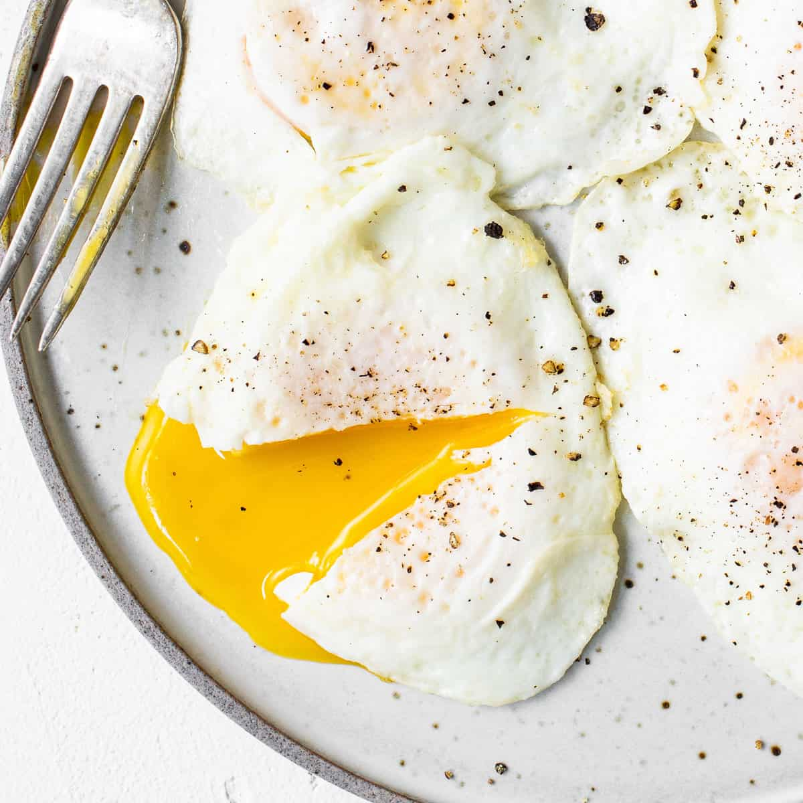

Over Easy Fried Eggs

Over Easy Fried Eggs are an Incredibly Simple, Quick, Easy, and Most Importantly, Delicious Breakfast. They are Fried on the Outside, but Have a Runny Yolk that Toast Tastes Great Dipped in
- The Amount of Eggs you Want
- Enough Butter to Coat your Skillet
- Salt and Pepper
Steps
- Bring a Skillet to Medium Heat
- Put the Butter in the Skillet, and Coat the Skillet Evenly
- Once the Butter is Bubbling, Crack an Egg into the Skillet
- Put Salt and Pepper on the Uncooked Egg Now
- Wait Till the Bottom White of the Egg Starts Bubbling, Then Flip
- Let it Cook for about 45 Seconds, then Plate
- Enjoy!
Back